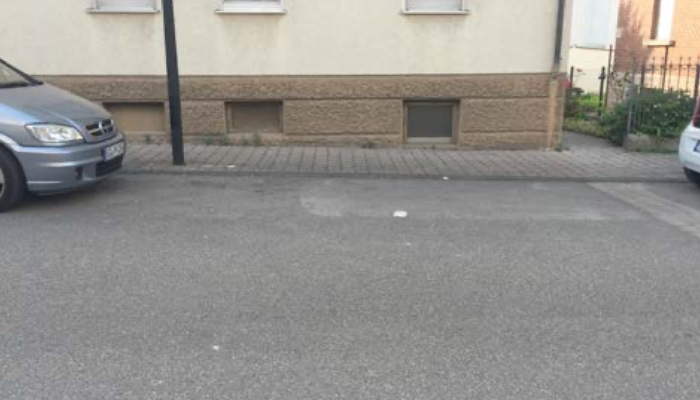

1. Semester - Design Grundlagen
Interaction Map
The challenge was to find a proband, which as the task to do a interaction with a product.
The proband in this case has the funktion of a first user of the product.
We had the funktion to observe the proband and the interaction, with monitor, to note down and film.
The result of the testing, should we register in a interaction map.
I let my proband test the park-assistent with the half automatic parking function from Ford.
Per button press the Active park assist (in- and out parking function) with ultrasonic
sensors helps identify a suitable parking space. Once you shift into reverse and take the hands off the wheel, the
system will steer the car vehicle into the space. While the driver control the accelerator and brakes.
Scenario
Starting situation:
You sit in your car and drives to your final destination. Here arrived you noticed that almost all parking spaces are taken.
But one parking space is free!

The Goal:
Progress
As already mentioned I let my proband test, my role was the observer. The proband should speak one's mind aloud.
To document everything and afterwards every step to relate to the interaction, I filmed and interviewed the proband in the end.
The next step was to get the first drafts on paper, these turn in to digital concepts.
End result